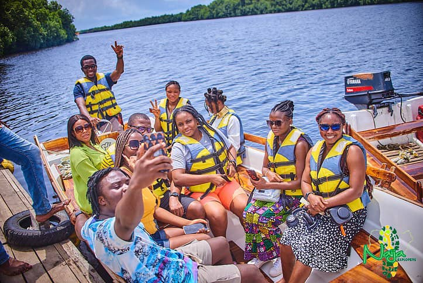
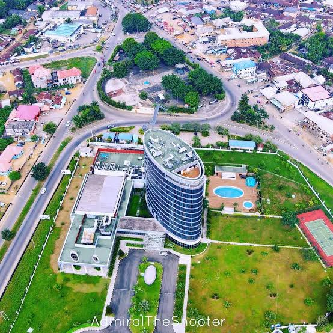
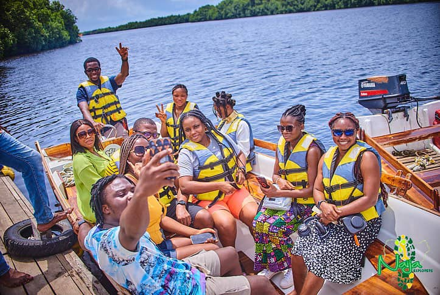
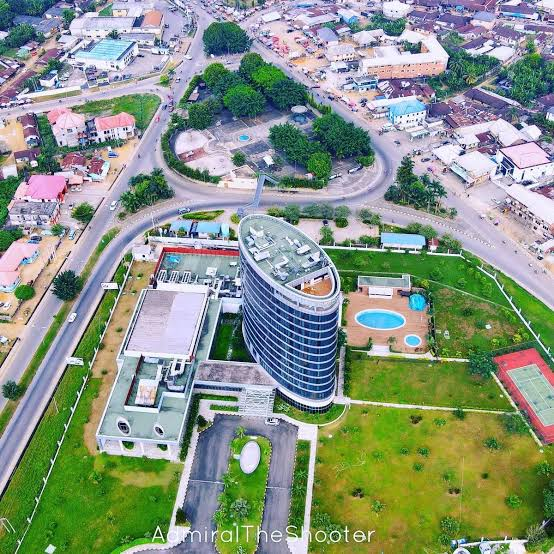

SUNDAY PRINCE AUGUSTINE | WDD-130
Welcome To Nigeria Rafting Site.

Hello I'm Sunday Prince Augustine, hailing from Akwa Ibom State in the South-South Niger Delta region of Nigeria. I am a Software Engineering student at Brigham Young University - Idaho, specializing in Web and Application Development. As a versatile scriptwriter, I craft precise and innovative scripts across multiple programming languages, including Python, JavaScript, and frameworks like React and Tailwind. Beyond my academic and professional pursuits, I’m passionate about games. I enjoy engaging in immersive gaming experiences, with some of my favorites including Rafting, Minecraft, Fortnite, Call of Duty, and Among Us. Gaming not only fuels my creativity but also inspires my problem-solving skills, which I apply to my software projects. I am a motivated individual driven by the belief that “Education is the key to success” and that “Success depends on effort. My goal is to contribute meaningfully to the tech industry, leveraging my skills to create impactful and scalable solutions.
- Custom Web Development
- Responsive Design
- SEO Optimization
 


